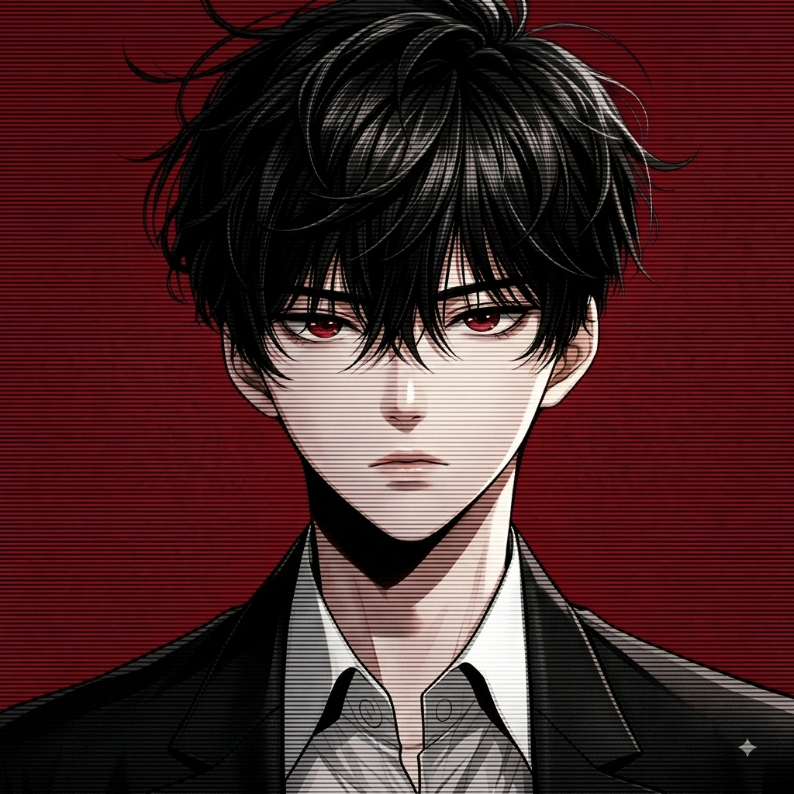

Selvaa
03:00 AM is a space built around thoughts, silence, imagination and the strange clarity that appears when the world becomes quiet.
I created this experience to turn a simple website into something that feels like a moment. A place where visuals, motion, sound and words meet.
I find meaning in the quiet moments — where thoughts become clearer, imagination feels limitless, and silence leaves enough space for something new to emerge.
03:00 AM represents that particular hour when everything becomes quieter, ideas become louder and the mind starts wandering somewhere between reality and imagination.


Things I have built.
TraderHub
A full-stack trading education platform designed around structured learning and digital experiences.
AetherOS
An enterprise-oriented multi-agent AI operating platform built around orchestration and intelligent systems.
03:00 AM
A cinematic frontend experience exploring manifestation, thoughts, atmosphere, motion and sound.